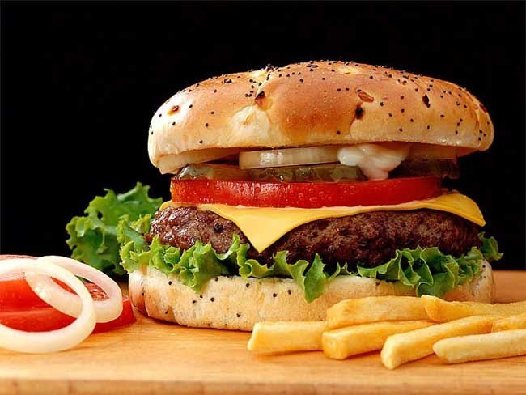

Innovando con Hamburguesas Caseras.. 09/07/2017
Una hamburguesa es un alimento en forma de bocadillo de carne picada aglutinada en forma de filete, cocinado a la parrilla o a la plancha, aunque también puede freírse u hornearse. Fuera del ámbito de habla hispana es más común encontrar la denominación inglesa burger. Se presenta en un pan ligero partido en dos que posee una forma de óvalo. Suele estar acompañada de aros de cebolla, hojas de lechuga, alguna rodaja de tomate, láminas de encurtidos, papas fritas etc
Comentarios EnviarComentarios anteriores
... Que buena combinacion!! pasame la receta!! Juan Perez, de Chile!Me encantan las hamburguesas caseras!! Lorena Ruiz, desde El Salvador
Acercate a probar nuestras BROCHETAS!! 03/07/2017
En gastronomía, brocheta (del francés brochette, que significa «pincho», «ensartado») se refiere a las comidas servidas ensartadas en un pincho (brochette). En otros países se conoce a este platillo como chuzo o pincho. En Francia es empleada como una hiperonimia. El término se refiere por igual al shish kebab, al satay o al souvlaki, indicando la generalidad de los alimentos cocinados que pueden ir ensartados o espetados en un pincho, que van desde las carnes de mamíferos, verduras, a los pescados y mariscos, etc. La comida servida en una brocheta generalmente es a la parrilla.
Comentarios EnviarComentarios anteriores
... Que buena combinacion!! pasame la receta!! Juan Perez, de Chile!Me encantan las hamburguesas caseras!! Lorena Ruiz, desde El Salvador